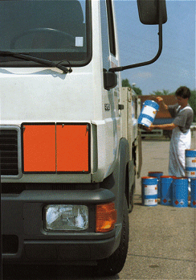

In der Bauwirtschaft haben im Wesentlichen fünf Personengruppen die Verpflichtung, die Vorschriften der GGVSEB einzuhalten:
Der Fahrzeughalter – also der Unternehmer – trägt nach dem Gesetz über die Beförderung gefährlicher Güter die grundsätzliche Verantwortung dafür, dass in seinem Betrieb die gefahrgutrechtlichen Vorschriften eingehalten werden.
Normalerweise überträgt er jedoch diese Verantwortung auf seine Führungskräfte bzw. auf betriebliches Fachpersonal. Seiner Aufsichtspflicht muss er aber in jedem Fall genügen. Er muss alle an den Transporten beteiligten Personen über deren Aufgaben und Pflichten unterweisen. Die Aufzeichnungen über die Unterweisungen sind aufzubewahren.
Abhängig von Art und Menge der zu befördernden Gefahrgüter muss der Unternehmer einen Gefahrgutbeauftragten bestellen und ausbilden lassen. Fahrzeugführer benötigen unter Umständen eine besondere Ausbildung.
Der Unternehmer ist in erster Linie für die Beschaffenheit und die Ausrüstung der Fahrzeuge, mit denen gefährliche Güter befördert werden, verantwortlich. Dazu gehören u.a.
Absender können sein: der Unternehmer, der Bauleiter oder der Polier auf der Baustelle, der gefährliche Güter zur Beförderung aufgibt. Dabei spielt es keine Rolle, ob die Güter mit eigenen oder fremden Fahrzeugen transportiert werden sollen. Der Absender trägt zum Beispiel die Verantwortung dafür, dass
Im Baubetrieb sind das im Allgemeinen Disponenten, Poliere auf der Baustelle oder Fahrzeugführer, die Fahrzeuge mit gefährlichen Gütern beladen. Sie müssen zum Beispiel folgende Regelungen beachten:
Werden bei der Anlieferung von Gefahrgütern durch Speditionen die Güter von Mitarbeitern des Baubetriebes entladen, sind folgende Regelungen zu beachten:
Achtung: Auch durch das Entladen kann sich die Notwendigkeit einer Bestellung eines Gefahrgutbeauftragten ergeben!
Der Fahrzeugführer (Fahrer) hat die Verkehrssicherheit zu gewährleisten. Verkehrssicherheit ist dann gegeben, wenn die Ladung so auf dem Fahrzeug verstaut ist, dass dies den allgemeinen Anforderungen des Straßenverkehrs genügt und sie auch bei einer Vollbremsung nicht verrutscht. Der Fahrzeugführer muss unter anderem folgendes beachten: